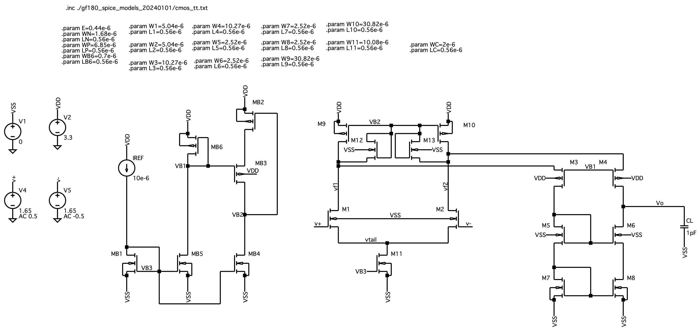
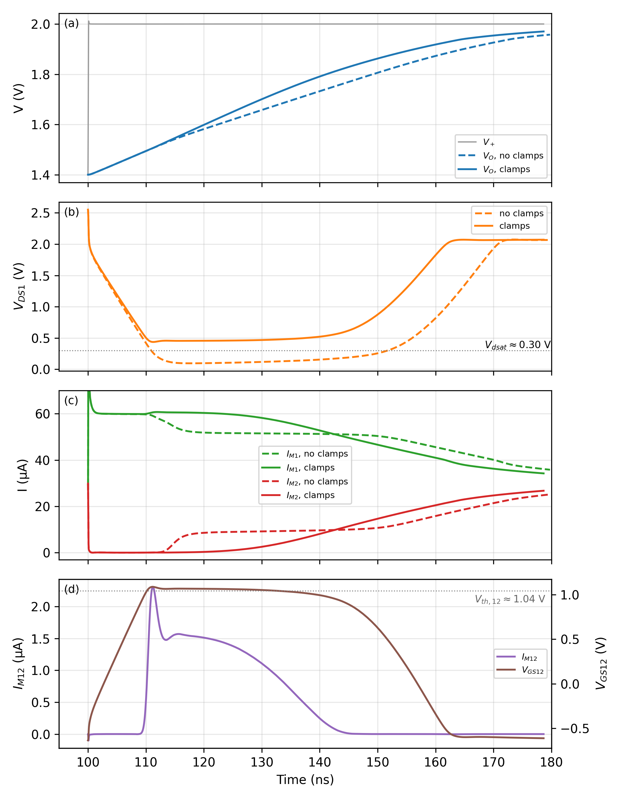
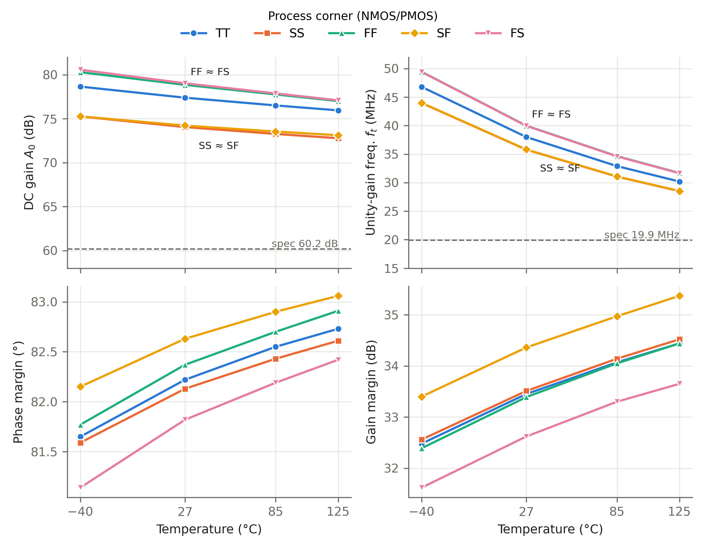

Folded cascode op-amp
A single-stage folded cascode sized to settle a 1 V step to 9-bit accuracy in under 100 ns, with NMOS clamps that keep the input pair out of triode while it slews. It meets both specs at every process corner from −40 to 125 °C.

| Parameter | Specification | Hand analysis | Simulated |
|---|---|---|---|
| Open-loop DC gain | ≥ 60.2 dB | 77.5 dB | 77.4 dB |
| Unity-gain frequency, ft | ≥ 19.9 MHz | — | 38.0 MHz |
| −3 dB bandwidth | — | — | 5.15 kHz |
| Phase margin | — | — | 82.2° |
| Gain margin | — | — | 33.5 dB |
| Settling to 2−9, 1 V step (rise / fall) | ≤ 100 ns | — | 36.8 / 30.9 ns |
| Slew rate (rise / fall) | — | — | 44.4 / 46.4 V/µs |
| Output swing | — | 1.16 to 2.88 V | — |
| Supply current / power | — | — | 126.6 µA / 0.418 mW |
Design notes
From settling spec to bias current
The target is a feedback factor of β = 0.5 settling to ε = 2−9 within 100 ns. That sets A0 > 1/(εβ) = 60.2 dB and ft > −ln(ε)/(2πβt) = 19.9 MHz. As a single-pole amplifier, ft = Gm/(2πCL), which fixes the input-pair gm and, at a 0.2 V overdrive, the tail current. I settled on a 60 µA tail, 30 µA per input device and 45 µA folding sources.
Sizing from current density
Every device runs at VOV = 0.2 V. I measured ID/W for a 0.56 µm-long NMOS (5.95 µA/µm) and PMOS (1.46 µA/µm) at that overdrive in LTspice, then set each width from its branch current. The operating point puts every Vdsat between 0.20 and 0.24 V.
A bias circuit that doesn't waste headroom
Two stacked diode-connected PMOS devices would generate VB1, but they leave M9/M10 about a full threshold voltage above saturation, which comes straight out of the output swing. Instead I undersized one diode (MB6) so its larger overdrive sets VB1 directly. Accounting for the body effect on the cascodes (ΔVt = 0.145 V), the square law predicts a width ratio of about 12; tuning in simulation landed on 9.8, giving M9/M10 the intended 150 mV of margin (VSD = 0.358 V).
Clamps for slewing
A large differential input steers the whole tail current into one side, which can only supply IB. The input device and the tail are pushed into triode. NMOS clamps M12/M13 sit off in normal operation (2.3 pA, no effect on the bias point) and turn on only when a folding node falls, keeping M1, M2 and M11 saturated. The gain is small at 1 pF because slewing ends quickly. At 5 pF, the clamps hold VDS1 above 0.44 V instead of letting it collapse to 96 mV, and the slew rate improves by about 14% on the rising edge and 10% on the falling edge.
Gain, by hand and in simulation
Using the simulated gm, gmb and ro, the cascoded output resistance gives a hand-calculated gain of 77.5 dB against 77.4 dB simulated. The output resistance is set mostly by the upper (PMOS) side, where M9/M10 run at a small VSD and have the lowest ro in the circuit.
| Measurement | Without clamps | With clamps |
|---|---|---|
| Rising slew rate | 39.3 V/µs | 44.4 V/µs |
| Falling slew rate | 44.6 V/µs | 46.4 V/µs |
| Settling to 2−9, rising | 38.9 ns | 36.8 ns |
| Settling to 2−9, falling | 35.0 ns | 30.9 ns |
| Undershoot | 20.0 mV | 10.6 mV |

Across process and temperature
I swept TT, SS, FF, SF and FS at −40, 27, 85 and 125 °C. Both specifications hold everywhere, with at least 12.6 dB of margin on gain and 43% on ft. Temperature matters most: as mobility falls, ft drops about 36% from −40 to 125 °C. Because the load capacitor compensates the amplifier, the phase margin moves by less than 2° across all 20 conditions.
| Parameter | Specification | Worst case | Where |
|---|---|---|---|
| DC gain | ≥ 60.2 dB | 72.8 dB | SS, 125 °C |
| Unity-gain frequency | ≥ 19.9 MHz | 28.5 MHz | SS, 125 °C |
| Phase margin | — | 81.1° | FS, −40 °C |
| Gain margin | — | 31.6 dB | FS, −40 °C |

| Device | Role | W (µm) | ID (µA) | |VGS| (V) | |VDS| (V) | |Vth| (V) | Vdsat (V) | gm (µS) | gds (µS) |
|---|---|---|---|---|---|---|---|---|---|
| M1, M2 | NMOS input pair | 5.04 | 30.0 | 1.07 | 2.36 | 0.887 | 0.208 | 251 | 1.06 |
| M3, M4 | PMOS cascode | 10.27 | 17.7 | 1.15 | 0.848 | 0.938 | 0.220 | 142 | 0.847 |
| M5, M6 | NMOS cascode (mirror) | 2.52 | 17.7 | 1.18 | 1.18 | 0.970 | 0.236 | 135 | 0.774 |
| M7, M8 | NMOS mirror | 2.52 | 17.7 | 0.912 | 0.912 | 0.703 | 0.224 | 134 | 0.940 |
| M9, M10 | PMOS folding current sources | 30.82 | 47.7 | 0.992 | 0.359 | 0.790 | 0.202 | 396 | 5.71 |
| M11 | NMOS tail source | 10.08 | 60.0 | 0.892 | 0.583 | 0.708 | 0.205 | 495 | 4.27 |
Still to come: CMRR, Monte Carlo mismatch, and a side-by-side comparison with the two-stage op-amp.